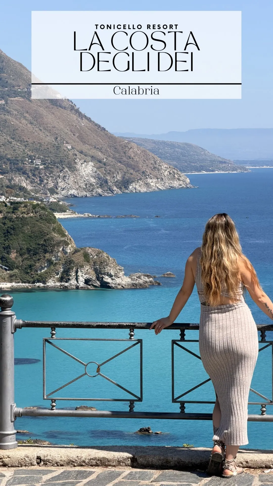
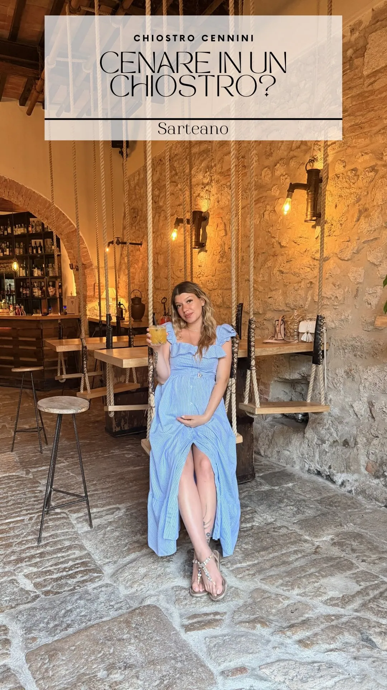

Travelliniwithus · L'album del viaggio
Posti che sembrano inventati.
I.Il mare di Capo Vaticano, visto dal Tonicello. Calabria, non Caraibi.

Dormire dentro una storia
Ma ci siamo stati davvero.
Ogni scena di questo album è un frame reale dei nostri viaggi. Nessuna immagine generata: se la vedi, ci siamo stati.
II.Un chiostro del Quattrocento diventato casa per una notte. Sarteano.
Palette · token reali
Le scene vivono su ink-deep (già usato per Mappa e hero scuri); i pannelli riportano la sand di brand sopra la foto. Nessun colore nuovo.
--color-ink-deep #111111--color-sand #faf8f4--color-accent #c2410c--color-accent-on-dark #e8834e--color-atlante-carta #f2ecdfSpecimen Fraunces · scala della direzione (la più display delle tre)
Claim/h1 — clamp(3.6rem, 7vw, 7.2rem) / 0.9 · Fraunces 400 · tracking −0.055em
Vale davvero?
Didascalia d'autore numerata (Hedwig) — Fraunces clamp(1.15rem, 1.6vw, 1.6rem) / 1.35
III. Drink che sembrano sangue, atmosfera gotica e un po' di scena. Volterra.
Claim del pannello — Fraunces clamp(2rem, 4vw, 3.4rem) / 1.05
Una scena, un'idea.
Kicker/meta — Inter 0.66rem · tracking 0.18em · uppercase
Hotel con carattere · Novara
Il gesto-firma · «la scena che si posa»
Ogni frame entra a piena pagina e il pannello-claim scivola e si assesta (motion 12: translateY 24px→0 + opacity, spring morbido) mentre la didascalia numerata si rivela (GSAP SplitText). Niente ken-burns, niente scroll-jack: lenis dà solo lo smorzamento. Qui nel lab il gesto è simulato con IntersectionObserver + transizioni CSS.
asset-curator a monte che estragga e selezioni i frame reali dei reel (imagery-truth).
Le foto di questa demo sono le cover reali già in repo; i frame di coppia NON sono inclusi perché
le attuali foto "coppia" in repo sono generate e non utilizzabili come referenziali.
Perf: è la direzione a rischio LCP più alto (full-bleed). Mitigazione obbligatoria: primo frame priority + responsiveWidths + AVIF/WebP; validazione perf-engineer su rete reale.